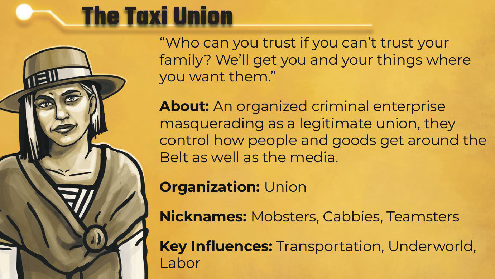
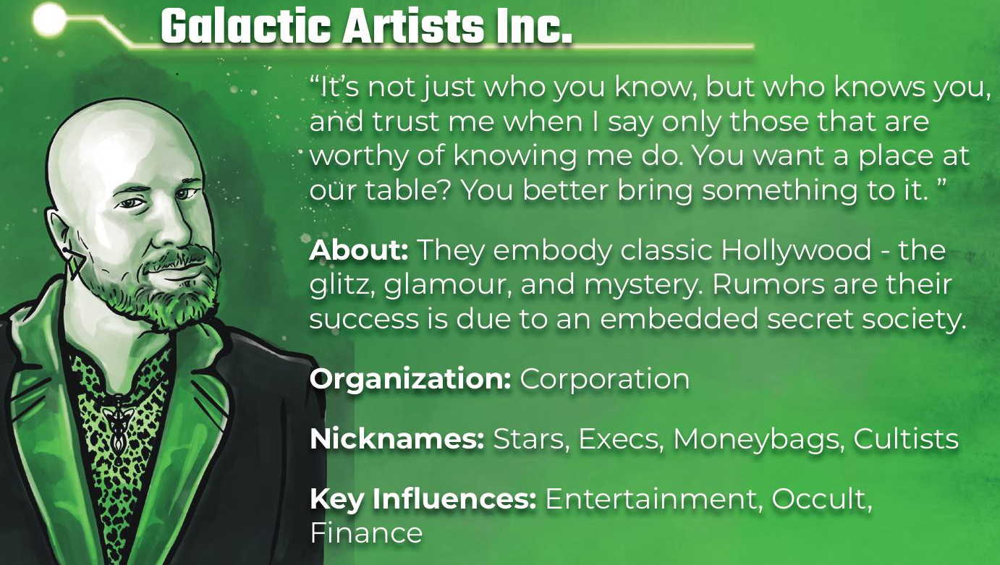
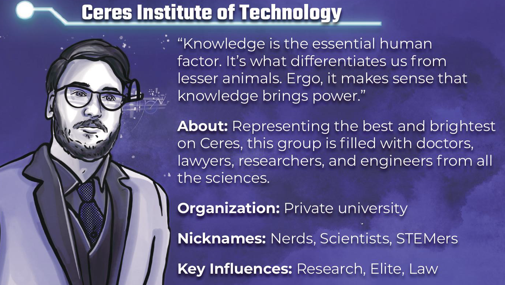
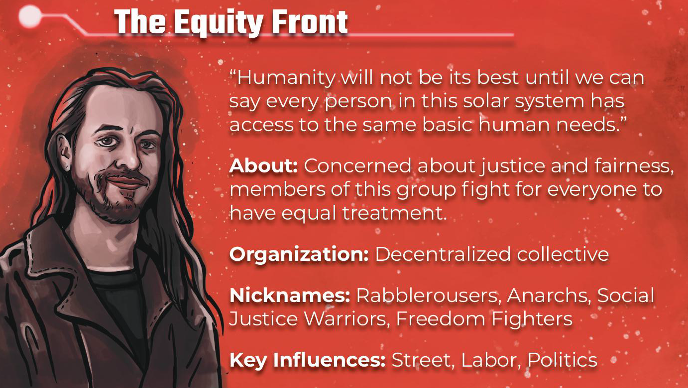
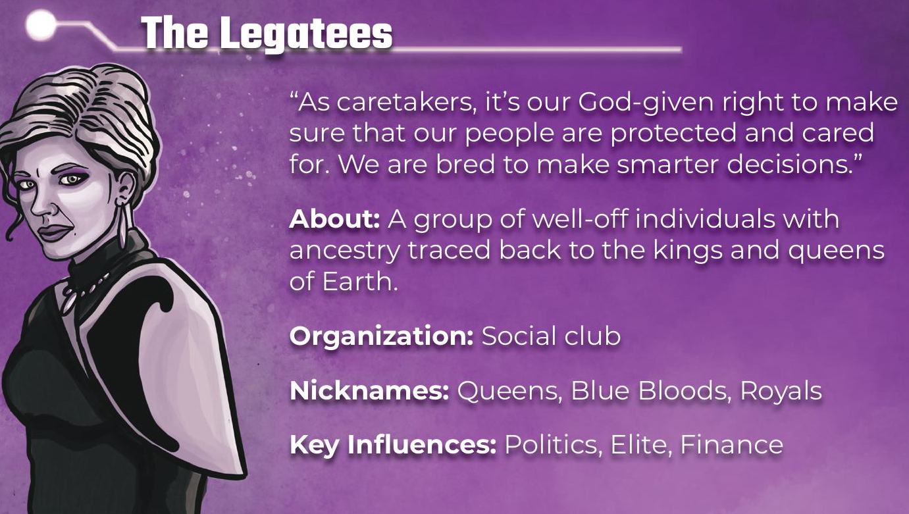

The Establishment
A hidden-influence board game of factions, storylines, and power. Use this web app to run your 4-round session — no paper scorekeeping needed.
This project is in honor of The Establishment creator Manda Shafer. Visit the official game site to learn more.





2–6 players
4 rounds
Local multiplayer
No account needed